Flowers that look like the picture, because you saw the picture
A concept for a Paris flower studio: identity, art direction, website and shop.
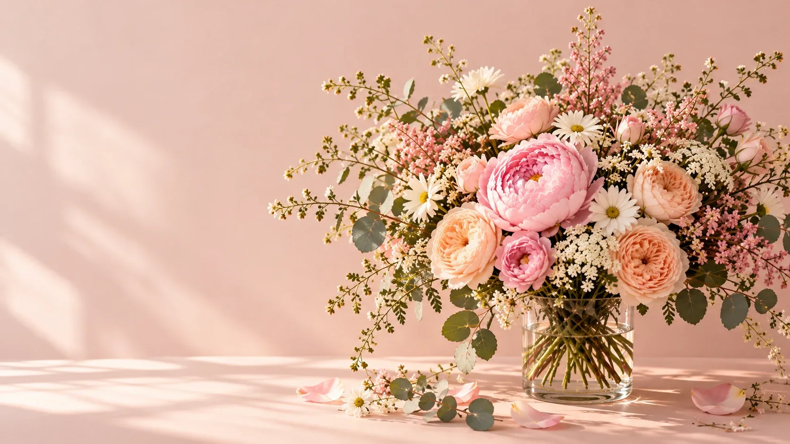
Brand · Website · Shop
People order flowers for someone else and never see what arrives. The site had to sell the feeling first, then remove the fear: will it look like the picture, will it be on time.
Catalogues of product codes. Nobody shops for “SKU 1043”.
Choose a mood, not a product: Tender, Joyful, Calm, Dreamy, Deep. The whole page takes on its colour.
“Will it look like the photo?”
A photo of the real bouquet before it leaves, on WhatsApp. Built into the hero, the story and the bag.
“Will it arrive today?”
An honest countdown to the 15:00 cut-off. After it, today simply disappears from the options.
Premium florists look the same: white, thin, quiet.
The name stands huge behind the bouquet, one photograph, one colour world per mood.
The house is the florist’s arched doorway, the petal is a single bud growing in it. It echoes the window in every photograph and still reads at 16 pixels.
The name stands between the wall and the bouquet. Pick a mood and the new bouquet blooms out from the vase, the letters recolour one by one, and the whole page follows.
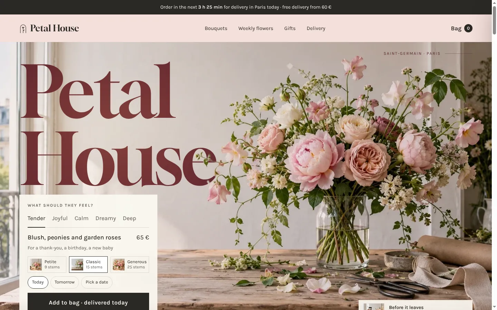
Added items slide in with the size and the delivery day. A bar fills towards free delivery, and the vase from our photos is offered once, not pushed.
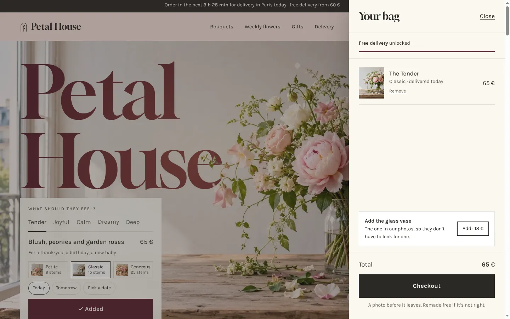
One pinned scene in three steps: choose a mood, receive the photo, the courier at the door. The promise told as a story, not a bullet point.
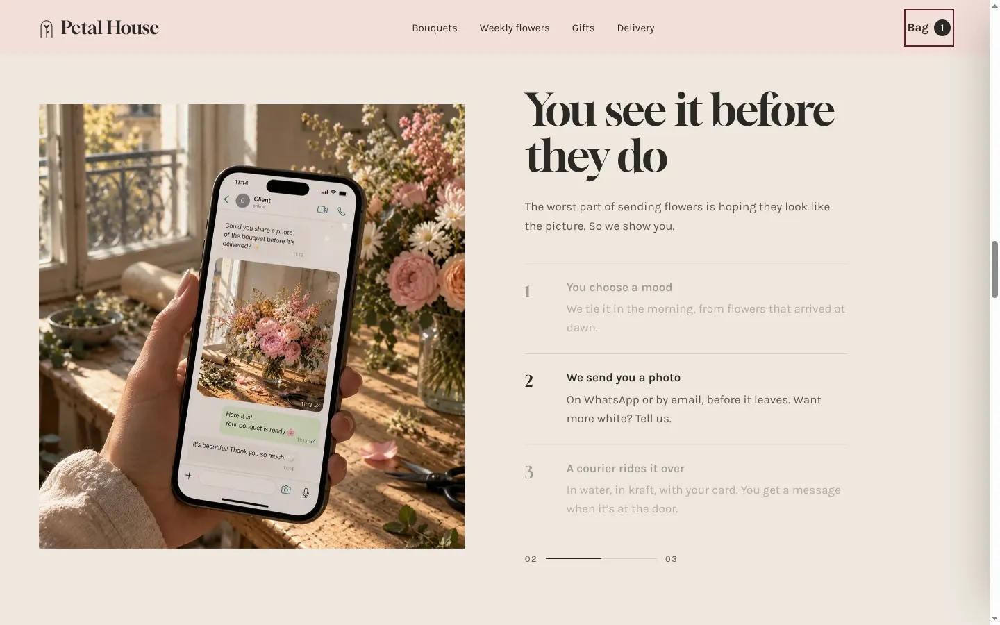
Hover lifts the card and offers a size. Once a bouquet is in the bag, it stays marked, so you never wonder what you already chose.
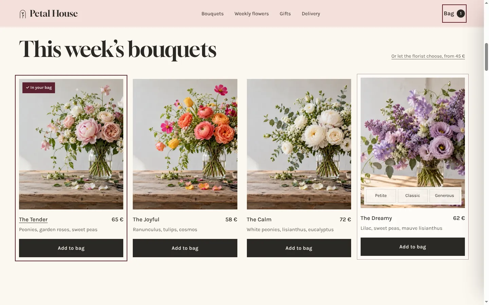
Petite, Classic and Generous are photographed, not described. The card is written by hand, and the price never reaches the person receiving it.
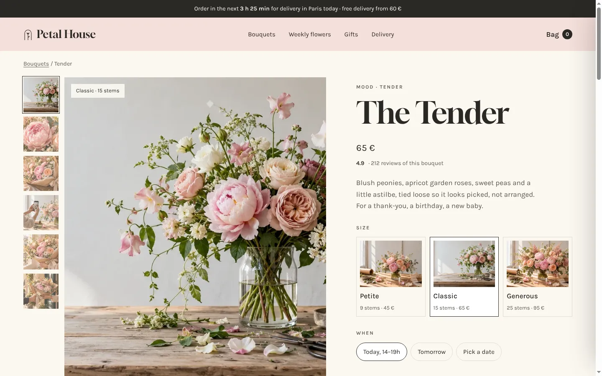
“Tied by hand” stands behind the bouquet, the same move as the first screen, so the story closes where it began.
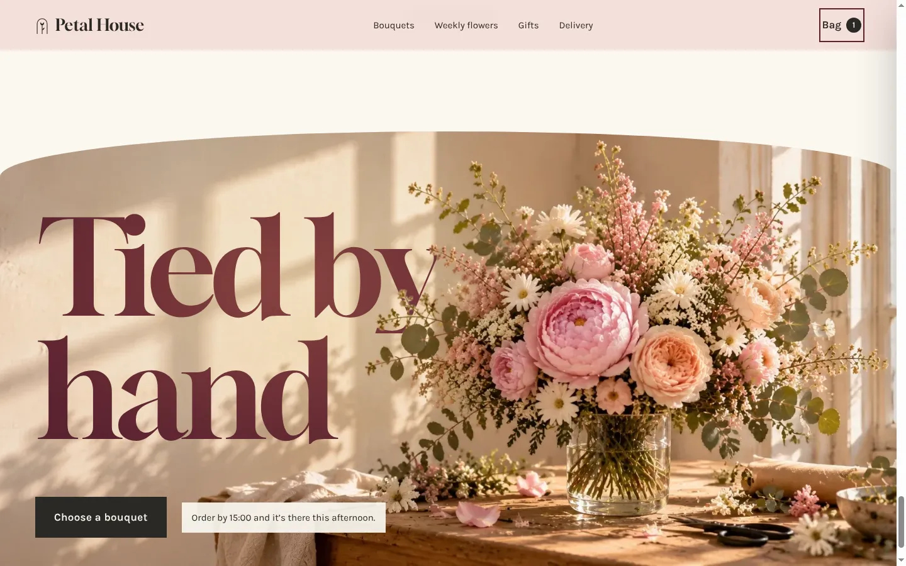
Most flowers are ordered on a phone, often on the way somewhere. The offer sits right under the photo, and a sticky button keeps the chosen bouquet and its price one tap away.
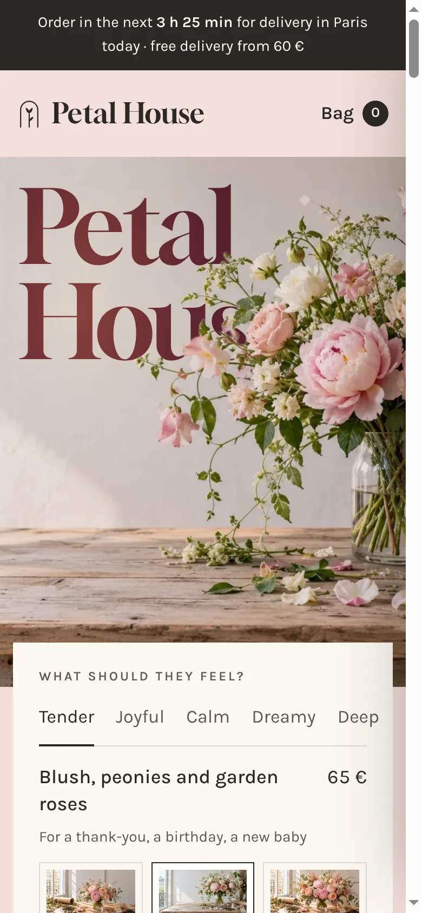
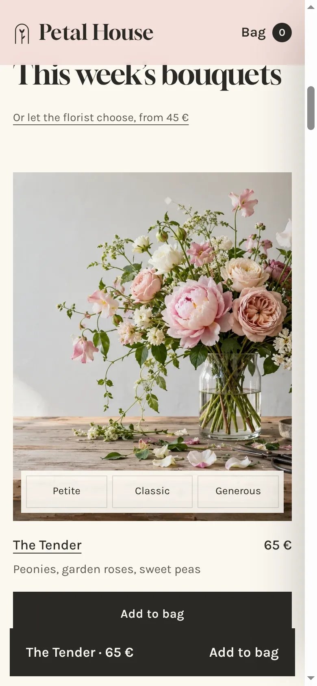
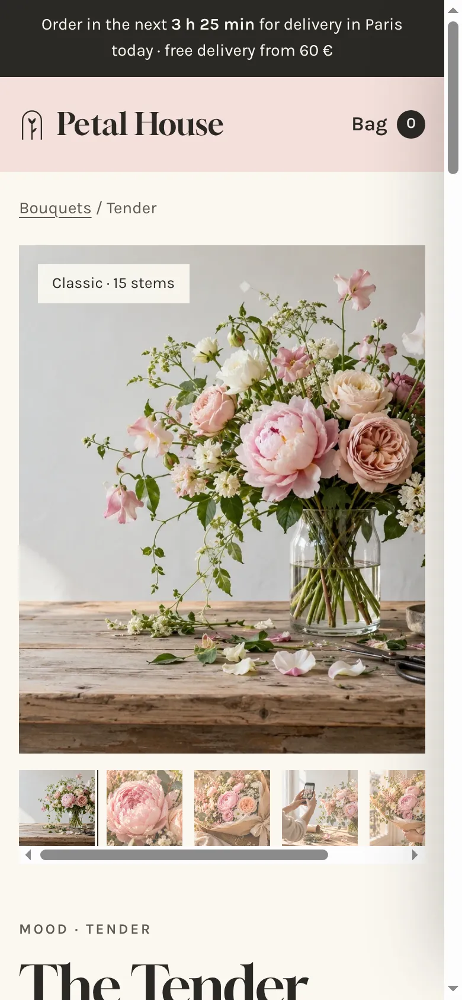
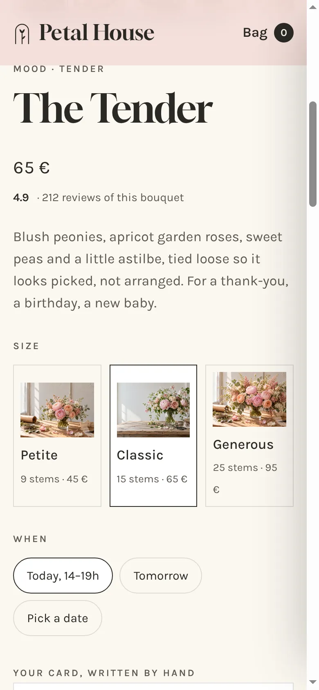
A concept for a Paris flower studio: identity, art direction, website and shop.